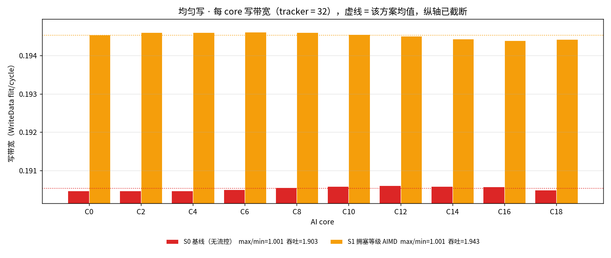
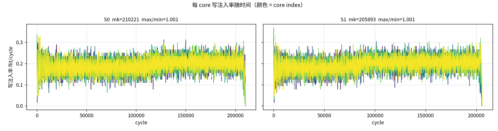
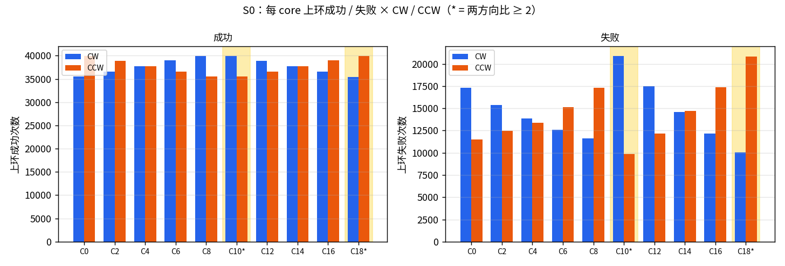
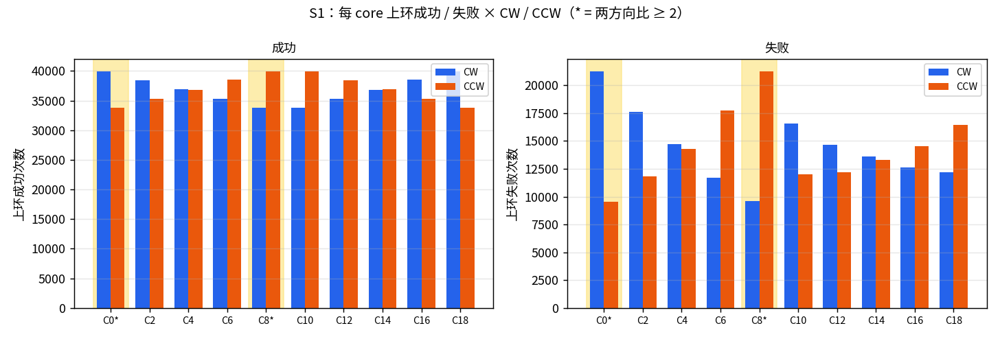

本次只跑 1 个 plane / 1 条 ring、均匀 tiled 写、 S0 与 S1。REQ / RSP / DAT 上下环口独立。 每 core 20000 笔 WriteNoSnp （请求量 ×10），每笔 2 个 WriteData flit。 HA 回 RSP / Comp 时延 U{4..64} 拍。

| 项目 | 取值 | 说明 |
|---|---|---|
| 节点数 / plane 数 | 20 / 1 | 一个双向闭合 full ring |
| AI core | 10 个：C0, C2, C4, C6, C8, C10, C12, C14, C16, C18 | 写发起方（CHI RN） |
| memory 节点 | 8 个：M1, M3, M5, M7, M11, M13, M15, M17 | 写目的地（completer） |
| 非终端节点 | N9, N19 | 在环上转发，但既不发起也不接收写 |
| 路由 | 最短路（跳数平局走 CW） | S0 及全部方案一致 |
| plane 选择 | least_occupied | 单平面，无 plane 选择 |
| 每 core outstanding | 128 | 同时在飞的写事务上限 |
| CHI VC | REQ / RSP / DAT | REQ、RSP、DAT 三条独立 VC，各自独立信用 |
| hop 容量 | 120 flit/cycle | 20 节点 × 2 方向 × 1 plane × 3 VC，σ=1 |
| 端口 | inject 1 / leave 1（每 node 每 plane 每 VC） | REQ / RSP / DAT 各有独立上下环口，互不占槽 |
| 上环队列深度 | 8 | 每 (node, plane, VC) |
| 下环队列深度 | 4 | 每 (node, plane, VC) |
| I-tag 门限 t_inj | 64 | 限制注入饥饿时长 |
| E-tag 门限 t_xfer | 4 | 限制偏转次数 |
| 写激励 | 128B burst / 4096B stride / 64KB tile | 1 flit = 64B，每笔 WriteData ×2；地址哈希已把 8 个 mem 均衡 |
| HA RSP 时延 | U{4..64} | 写请求到达 memory 后，DBIDResp / RetryAck / Comp 各自独立抽 |
| 拥塞总线时延 | 30 拍 | S1 / S15 专用广播，不占环上 hop；窗口 64 拍 |
| 无向边 | hop 时延（拍） | 备注 |
|---|---|---|
| C0 — M1 | 2 | |
| M1 — C2 | 2 | |
| C2 — M3 | 2 | |
| M3 — C4 | 3 | |
| C4 — M5 | 1 | |
| M5 — C6 | 3 | |
| C6 — M7 | 1 | |
| M7 — C8 | 1 | |
| C8 — N9 | 2 | |
| N9 — C10 | 4 | |
| C10 — M11 | 1 | |
| M11 — C12 | 1 | |
| C12 — M13 | 3 | |
| M13 — C14 | 1 | |
| C14 — M15 | 3 | |
| M15 — C16 | 2 | |
| C16 — M17 | 2 | |
| M17 — C18 | 2 | |
| C18 — N19 | 3 | |
| N19 — C0 | 3 | 闭合边（N19 ↔ C0） |
一笔写 = REQ → DBIDResp → WriteData×2 → Comp。 per-core 写带宽 = 争用窗口内成功上环的 WriteData flit / cycle。
地址走 tile × 64KB + (i mod 16) × 4KB，interleave 已均衡。
completer 侧每条 RSP（DBIDResp / RetryAck / Comp）独立抽
U{4..64} 拍；同一笔事务在 S0 / S1 抽到同一份时延。
本轮 1 plane、K = 20000。
meta.stimulus_forecast，对照写在
meta.belief_update，前者不改。
验收线仍是 max/min ≤ 1.05 且吞吐相对基线不下降超过 1%。
| 下界 | cycle | 含义 |
|---|---|---|
| LB_link 每 VC 独立链路 | 70000 | REQ/RSP/DAT 各占一条 VC，取三者最大 |
| LB_port 每 VC 独立端口 | 50000 | inject / leave 每 (node, plane, VC) 一口，三通道不再叠在一起 |
| LB_cut 割集 | 50000 | 跨割面的流量除以割面上的有向链路数 |
| LB_txn 事务串行链 | 89 | REQ→DBIDResp→WriteData→Comp 两个来回 |
| bound | 70000 | 以上取最大 |
makespan 下界 70000 拍，由 LB_link 决定， 即 最忙的那条有向链路上、DAT VC 的容量。
| 方案 | makespan | max/min | 最低 BW | 最高 BW | 吞吐 flit/cycle | 吞吐差 | 重试/事务 | 偏转 | 上环失败 |
|---|---|---|---|---|---|---|---|---|---|
| S0 基线（tracker = 32） | 210221 | 1.0008 | 0.19047 | 0.19061 | 1.9028 | +0.0% | 0.7735 | 122465 | 1053111 |
| S1 拥塞等级 AIMD | 205893 | 1.0012 | 0.19439 | 0.19462 | 1.9428 | +2.1% | 0.6879 | 115245 | 973233 |
| 每 completer 的请求 tracker | makespan | 吞吐 | max/min | 最低 BW | 最高 BW | 重试/事务 | 峰值占用表项 | 有效 outstanding | 延迟 p99 |
|---|---|---|---|---|---|---|---|---|---|
| ∞（环受限） | 114229 | 3.5017 | 1.1382 | 0.33055 | 0.37622 | 0.0 | 177 | 122.38 | 112626 |
| 32（本报告基线） | 210221 | 1.9028 | 1.0008 | 0.19047 | 0.19061 | 0.7735 | 32 | 25.41 | 207540 |



归因在无限 tracker（环受限）参照上做；4.4 回到有限 tracker。
| core | 相邻 mem 数 | 到 mem 平均跳数 | S0 写带宽 | 上环成功率 | hop_busy 失败 | I-tag 失败 | outstanding 失败 | 出向平均 λ |
|---|---|---|---|---|---|---|---|---|
| C0 | 1 | 5.0 | 0.19047 | 0.6941 | 17632 | 0 | 0 | 2.5 |
| C2 | 2 | 5.0 | 0.19047 | 0.6977 | 17328 | 0 | 0 | 2.0 |
| C4 | 2 | 5.0 | 0.19047 | 0.7022 | 16963 | 0 | 0 | 2.0 |
| C6 | 2 | 5.0 | 0.1905 | 0.701 | 17064 | 0 | 0 | 2.0 |
| C8 | 1 | 5.0 | 0.19055 | 0.6919 | 17810 | 0 | 0 | 1.5 |
| C10 | 1 | 5.0 | 0.19058 | 0.6893 | 18034 | 0 | 0 | 2.5 |
| C12 | 2 | 5.0 | 0.19061 | 0.6959 | 17481 | 0 | 0 | 2.0 |
| C14 | 2 | 5.0 | 0.19058 | 0.6968 | 17409 | 0 | 0 | 2.0 |
| C16 | 2 | 5.0 | 0.19057 | 0.6979 | 17311 | 0 | 0 | 2.0 |
| C18 | 1 | 5.0 | 0.19049 | 0.6921 | 17795 | 0 | 0 | 2.5 |

带宽与上环成功率 r = 0.9993 （Spearman 0.9879）， 与解析过路流量 r = 0.0。 成功次数几乎按最短路 1:1 切开；不平衡出在失败次数—— 邻 mem = 1 的核失败集中在朝向仅剩那个 mem 的一侧。
每个 AI core 的上环口按最短路把 REQ / WriteData 送进 CW（+1）或 CCW（−1）。次数是该核作为源的上环（不是 HA 回 RSP）。黄底行是两方向比 ≥ 2 的核。
S0 · S0 基线（无流控）

| core | 成功 CW | 成功 CCW | 成功比 | 失败 CW | 失败 CCW | 失败比 | |
|---|---|---|---|---|---|---|---|
| C0 | 35476 | 39986 | 1.13 | 17309 | 11471 | 1.51 | |
| C2 | 36535 | 38929 | 1.07 | 15356 | 12484 | 1.23 | |
| C4 | 37773 | 37699 | 1.00 | 13889 | 13387 | 1.04 | |
| C6 | 38952 | 36520 | 1.07 | 12571 | 15116 | 1.20 | |
| C8 | 39989 | 35500 | 1.13 | 11648 | 17327 | 1.49 | |
| C10 | 39980 | 35499 | 1.13 | 20917 | 9845 | 2.12 | 偏 |
| C12 | 38931 | 36548 | 1.07 | 17484 | 12181 | 1.44 | |
| C14 | 37696 | 37769 | 1.00 | 14588 | 14739 | 1.01 | |
| C16 | 36518 | 38954 | 1.07 | 12157 | 17345 | 1.43 | |
| C18 | 35471 | 39984 | 1.13 | 10019 | 20819 | 2.08 | 偏 |
高亮：该核 CW/CCW 成功或失败次数比 ≥ 2（该侧合计 ≥ 50）。S0 上 2/10 个核偏了。
S0 失败比 ≥ 1.5 的核：C0 失败偏 CW（1.51）；C10 失败偏 CW（2.12）；C18 失败偏 CCW（2.08）。高亮线仍是 ≥ 2，不因本轮结果改。
S1 · S1 拥塞等级 AIMD

| core | 成功 CW | 成功 CCW | 成功比 | 失败 CW | 失败 CCW | 失败比 | |
|---|---|---|---|---|---|---|---|
| C0 | 39984 | 33772 | 1.18 | 21286 | 9516 | 2.24 | 偏 |
| C2 | 38477 | 35275 | 1.09 | 17620 | 11814 | 1.49 | |
| C4 | 36938 | 36827 | 1.00 | 14697 | 14279 | 1.03 | |
| C6 | 35256 | 38505 | 1.09 | 11704 | 17751 | 1.52 | |
| C8 | 33782 | 39985 | 1.18 | 9596 | 21263 | 2.22 | 偏 |
| C10 | 33777 | 39983 | 1.18 | 16542 | 12029 | 1.38 | |
| C12 | 35278 | 38479 | 1.09 | 14647 | 12197 | 1.20 | |
| C14 | 36819 | 36933 | 1.00 | 13586 | 13327 | 1.02 | |
| C16 | 38504 | 35257 | 1.09 | 12653 | 14554 | 1.15 | |
| C18 | 39985 | 33762 | 1.18 | 12177 | 16436 | 1.35 |
高亮：该核 CW/CCW 成功或失败次数比 ≥ 2（该侧合计 ≥ 50）。S1 上 2/10 个核偏了。
S1 失败比 ≥ 1.5 的核：C0 失败偏 CW（2.24）；C6 失败偏 CCW（1.52）；C8 失败偏 CCW（2.22）。高亮线仍是 ≥ 2，不因本轮结果改。
REQ / RSP / DAT 的有向 hop 各有一份 σ=1 信用，互不占槽。
一笔事务仍要三条腿都走完，所以事务率受三张平面里最紧的那张限制：
λ ≤ min(λ_REQ, λ_RSP, λ_DAT)。
本小节不把三 VC 叠进同一个上下环口。
均匀最短路下，热 hop（0→1、8→7、10→11、18→17 及其反向） 各被 14 条 (core, HA) 流穿过。系数 DAT = 14·2/8 = 3.50， RSP = 14·2/8 = 3.50， REQ = 14/8 = 1.75。
拥塞总线延迟 30 拍，控制窗口 64 拍。 端口拆开后 S1 的节点预算上限按 VC 数放大（窗口 × 3），避免把三通道独立注入口误限成 1 flit/cycle。 反馈只在窗口边界写入并在下一窗口边界读取： 30 < 64，所以 30 拍与 1 拍都在下一次 AIMD 之前送到， 本轮 S1 与总线=1 时逐拍相同（makespan 205893）。

数据：results/ring2_write_fair.json
（K=20000、W=2、n_planes=1、
seed=0，生成于 2026-08-25T07:44:54Z）。